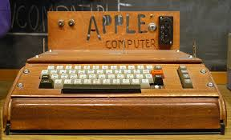
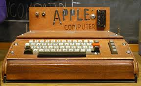

Que es APPLE?
Apple Inc. es una de las empresas más influyentes en la historia de la tecnología. Aquí te presento un resumen de su evolución a lo largo de los años:
Apple Inc. es una de las empresas más influyentes en la historia de la tecnología. Aquí te presento un resumen de su evolución a lo largo de los años:
.jpeg (2).jpeg)
.jpeg (3).jpeg)
.jpeg (4).jpeg)
.jpeg (5).jpeg)
.jpeg (6).jpeg)